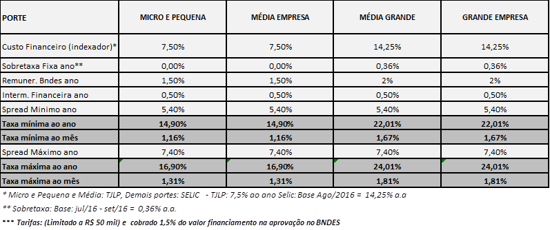

BNDES Progeren
Created Friday 23 October 2015
Atualizado em 18/01/2016
Atualizado em 18/04/2016
Atualizado em 05/09/2016
**Lembre-se que a Fomento só acata projetos de BNDES Progeren para quem possui CNPJ**
** TAC para Progeren incide somente na liberação do financiamento, por isso o cliente não terá ônus algum para encaminhar pedido de financiamento **
** Linha foi reaberta pelo BNDES com validade até 31/12/2016 **
** Circular BNDES 21/2016 alterou taxas para o Progeren. Taxas ficaram mais baixas para micro, pequenas e médias empresas. Para Grandes não houve alteação de taxa **
** alteração da comprovação do faturamento da empresa. Micro e pequenas empresas comprovam pelo simples ou Escrituração fiscal digital em financiamentos até R$ 500 mil (antes era até R$ 300 mil) **
PÚBLICO ALVO
Empresas com faturamento anual registrado na contabilidade de, no mínimo R$ 500 mil.
PORTE DAS EMPRESAS

LIMITE FINANCIÁVEL
Até 20% do faturamento CONTÁBIL do ano de 2015.
Este limite não pode ser superior ao valor do Patrimônio Líquido da empresa em financiamentos acima de R$ 1 milhão.
O Patrimônio Líquido é o valor registrado no Contrato Social da empresa.
COMPROVAÇÃO DO FATURAMENTO CONTÁBIL DA EMPRESA
Micro e Pequenas Empresas - financiamentos até R$ 500 mil
1) Empresas optantes pelo SIMPLES NACIONAL
2) Empresas optantes pelo Lucro Presumido ou Lucro Real
Empresas de qualquer porte - financiamentos ACIMA de R$ 500 mil
- Balanços patrimonial e o DRE- Demonstrativo de Resultado do Exercício, dos 03 (três) últimos exercícios,
- DMPL - Demonstração de mutação do PL;
- DFC - Demonstração do Fluxo de Caixa. , juntamente com os últimos 03 balanços (digitalizados).
VALORES DE FINANCIAMENTO
Valor mínimo: R$ 100 mil
Valor máximo: R$ 20 milhões
PRAZO E CARÊNCIA
Prazo máximo: 60 meses
Carência máxima: 12 meses
O período de carência está embutido no prazo máximo de financiamento, ou seja, num financiamento de 60 meses com 12 de carência o cliente pagará 48 parcelas.
Os juros do período de carência serão pagos trimestralmente.
TAXA DE JUROS

** Alertar o cliente que a taxa é pós-fixada em TJLP ou Selic e são taxas que podem variar ao longo do contrato e qualquer variação, para mais ou para menos, incide sobre o contrato **
GARANTIAS
Conforme Política de Garantias da Fomento Paraná - ver instruções em item Garantias
Backlinks: 5. Linhas de Financiamento:Banco do Empreendedor - MPE 2. Identificando a necessidade do cliente:PJ - Micro e Pequenas Empresas 2. Identificando a necessidade do cliente:PJ - Medias e Grandes Empresas:Medias Empresas 2. Identificando a necessidade do cliente:PJ - Medias e Grandes Empresas:Grandes Empresas 3. Como solicitar financiamento pelo site:1. Iniciado - Fase do Cliente 5. Linhas de Financiamento:Credito Jovem 1. Wiki Fomento - Atendimento ao Cliente 5. Linhas de Financiamento